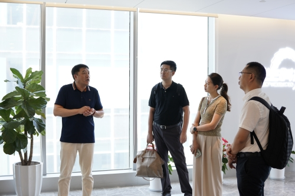
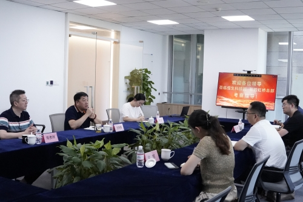
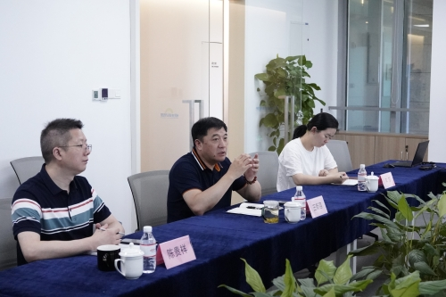
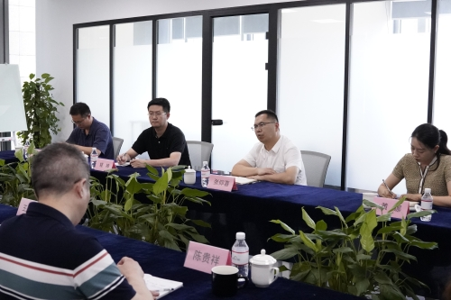

8月9日 ，山东省济宁高新区投资招商团莅临恒生科技园上海运营中心进行考察交流活动。此次活动旨在加强双方在生命科学领域的合作与发展，推动高新技术产业的进一步融合。考察团由济宁高新区投资促进局副局长张仰喜率领，成员还包括济宁高新区园区发展服务中心副主任、医养健康产业园管委会主任黄娜等多位领导。考察团希望通过本次考察深入了解恒生科技园在科技创新、产业运营及生态建设等方面的经验与成果。


恒生云创总裁王新荣首先对考察团的莅临表示热烈的欢迎，随后向考察团介绍了佘山生命科学园的项目以及项目地的区位优势。考察团重点关注了恒生科技园在生命科学领域的布局和发展，特别是与生物技术、医药研发、医疗器械等相关的企业孵化和支持体系。通过现场交流，考察团深入了解了园区内企业在生命科学研究方面的最新进展。


在座谈会上，双方就生命科学产业的发展趋势、政策支持、技术创新以及国际合作等方面进行了深入的讨论。济宁高新区投资促进局副局长张仰喜表示，恒生科技园产业培育和企业孵化很专业，希望通过此次考察，借鉴恒生科技园的成功经验，进一步推动济宁高新区在生命科学领域的创新发展。双方还探讨了未来可能的合作方向，包括但不限于共建研发中心、生命科学园区等促进两地企业之间的合作项目。此次考察不仅加深了双方的相互了解，也为未来的合作奠定了坚实的基础。
此次考察交流活动为济宁高新区和恒生科技园之间搭建了一个重要的沟通平台，有助于双方在生命科学领域建立更加紧密的合作关系，共同推进中国生命科学产业的进步和发展。